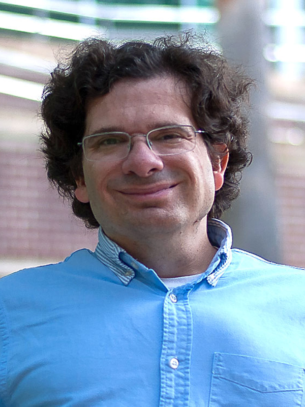
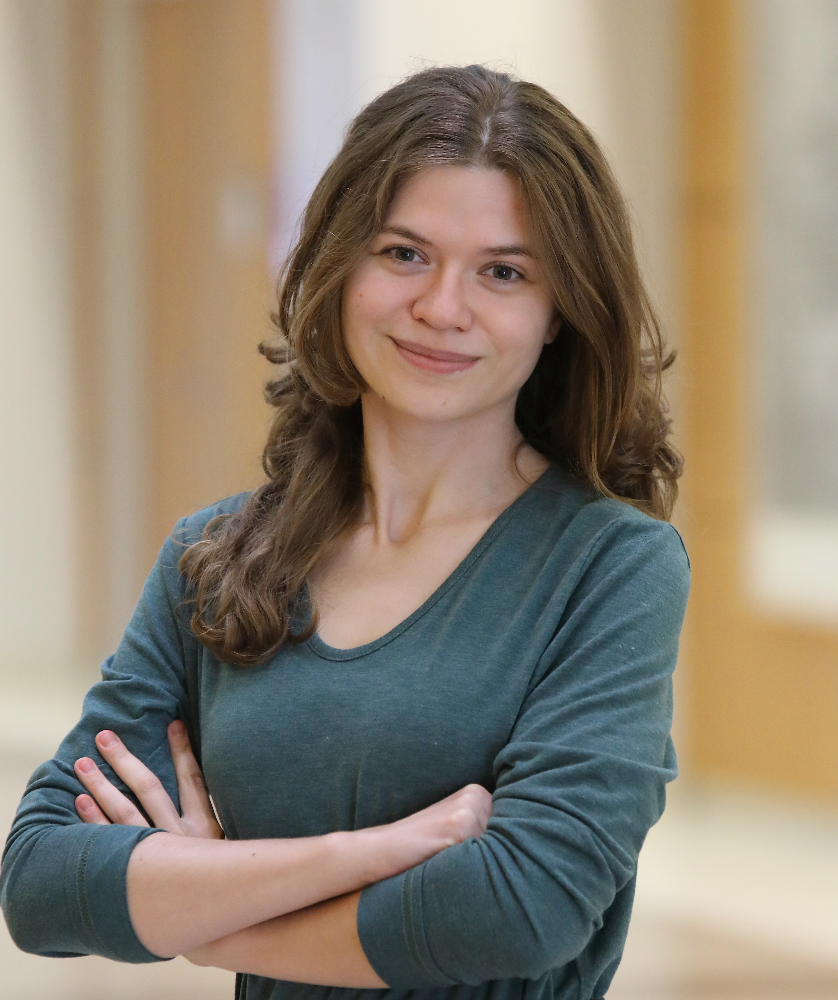
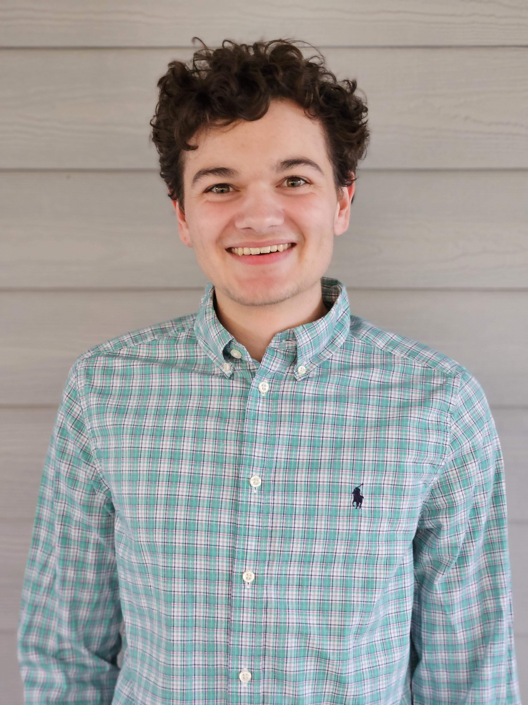
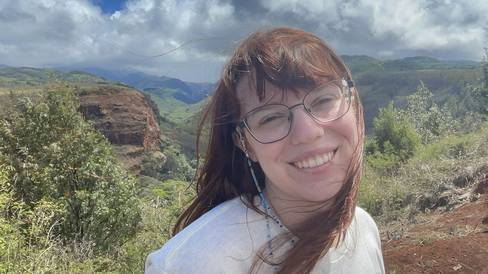
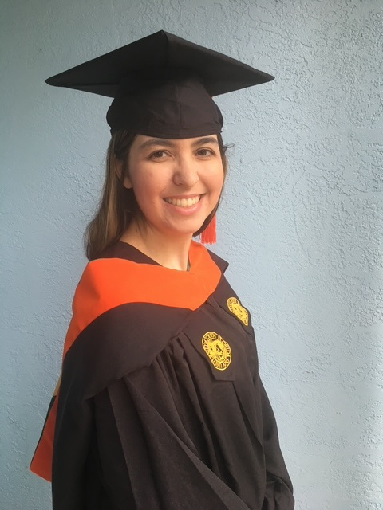
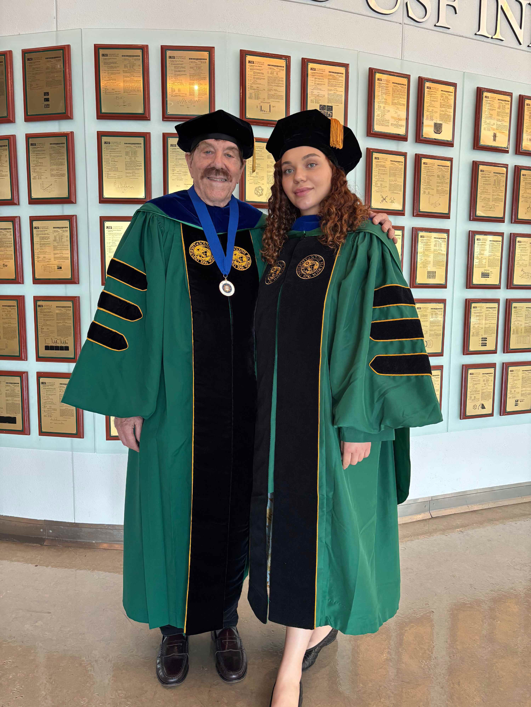
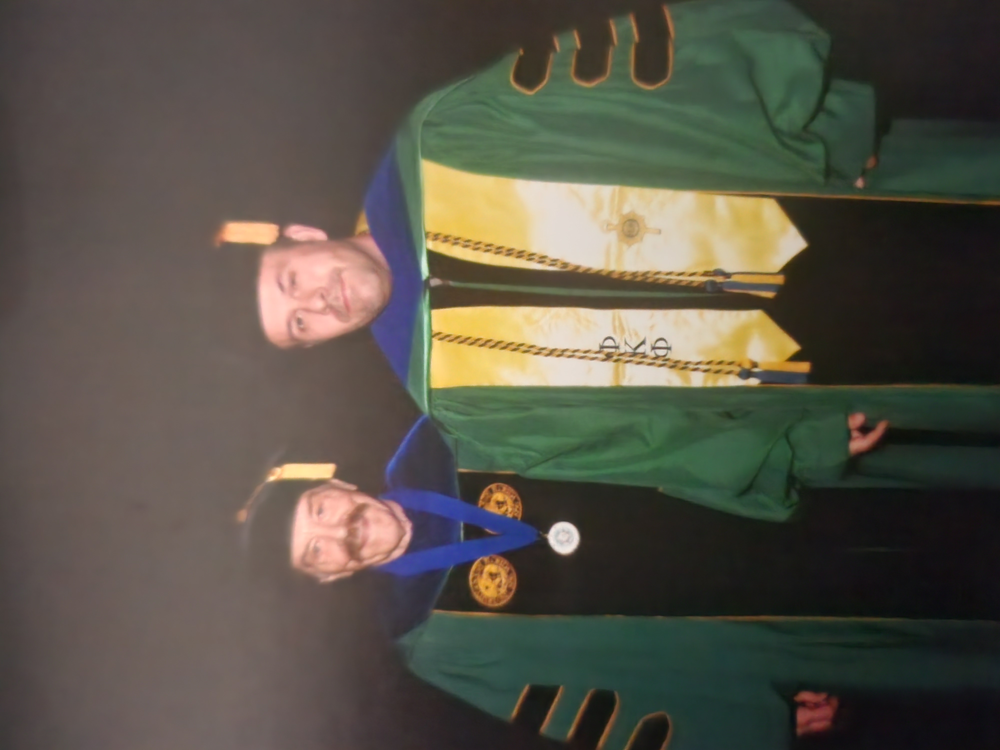
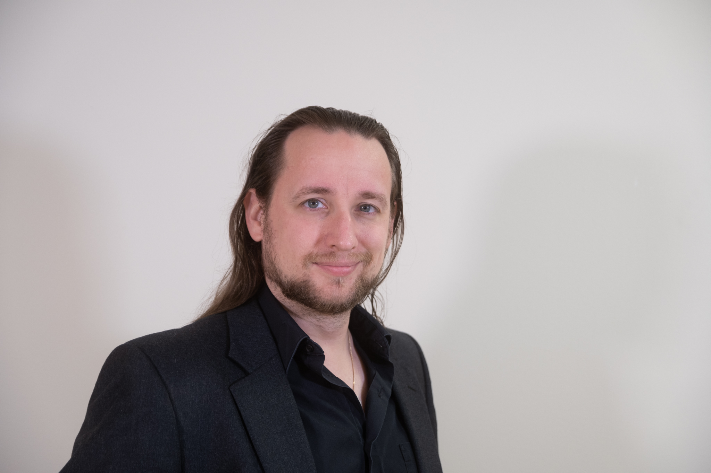

Kenyon Daniel, PhD

Dr. Kenyon Daniel earned his Bachelor of Science in Chemical Engineering from the University of Florida, followed by a Master of Science in Biomedical Engineering from the University of South Florida. He went on to complete a PhD in Chemical and Biomedical Engineering, also at USF. Dr. Daniel completed his post doctoral work at the Karmanos Cancer institute at Wayne State University in Detroit Michigan.
His current research focuses on developing advanced biomaterials and drug delivery systems for cancer therapeutics, specifically investigating nanoparticle platforms to enhance targeted immunotherapy.
He is also a General Rabble Rouser.
Wesley Brooks, PhD

Dr. Wesley Brooks earned his Associate of Science in Life Sciences from William Rainey Harper College, followed by a Bachelor of Science in Management Information Science from Christopher Newport College. He went on to complete a Master of Business Administration in Management Information Sciences from the University of Wisconsin, a PhD in Biochemistry from the Medical College of Wisconsin in Prof. Vaughn Jackson’s lab studying basic epigenetics (histone/DNA interactions), a Post-Doc in Molecular Biology and Biochemistry at the University of Florida in Prof. Tom Yang’s lab studying higher-order epigenetics (X chromosome inactivation), and a Senior Post-Doc in Drug Discovery at Moffitt Research Institute in Prof. Wayne Guida’s core facility labs (computational and experimental drug discovery).
He later served as a Research Scientist and Senior Staff Scientist at Moffitt and is currently a Research Assistant Professor and Courtesy Assistant Professor in the Department of Chemistry at the University of South Florida in Prof. Wayne Guida’s lab.
His current research focuses on epigenetics and polyamine metabolism, specifically investigating disease mechanisms underlying systemic lupus erythematosus and Alzheimer’s disease through computational and experimental drug discovery approaches.
Dr. Wesley Brooks has been consistently recognized on the Stanford World Top 2% Scientists List annually since 2021, reflecting his status among the top 2% of global scientists based on citation impact.
Brandi Cook, MS

Brandi Cook earned dual Bachelor of Science degrees in Microbiology and Biology, with a minor in Chemistry, from the University of Montana. She went on to complete a Master of Science in Cellular, Molecular, and Microbial Biology from the University of South Florida, where she is currently a PhD candidate in Chemistry.
Her current research focuses on computational modeling of nanofibers for drug therapeutics against biological pathogens, specifically investigating antimicrobial nanostructures to combat infectious diseases.
Andy Erly, MA

Andy Erly earned his Bachelor of Science in Chemistry and Bachelor of Arts in Philosophy from the University of Arizona. He went on to complete a Master of Arts in Chemistry at the University of Arizona and is currently a second-year PhD candidate in Chemistry at the University of South Florida under the guidance of Dr. Kenyon Daniel.
His current research focuses on using molecular dynamics to quantify the information content of protein-protein interactions through molecular recognition features (MoRFs) and the influence of cellular conditions on extragenetic information in living systems.
Katarzyna Mizgalska, MS

Katarzyna Mizgalska earned her Bachelor of Science in Chemistry from the University of Wrocław, Poland, in 2021. She went on to complete a Master of Science in Drug Discovery and Development (Medicinal Chemistry - Molecular Modeling) at the Jagiellonian University Medical College, Kraków, Poland, in 2023, and is currently a third-year PhD candidate in Chemistry at the University of South Florida under the guidance of Dr. Wayne Guida.
Kat is a third-year Ph.D. student in Dr. Guida’s group, focusing on the computational analysis of potential Nicotinamide Phosphoribosyltransferase (NAMPT) activators.
Mark Eschenfelder, BS

Mark Eschenfelder earned his Associate of Arts degree from St. Petersburg College in 2019, followed by a Bachelor of Science in Chemistry from the University of South Florida in 2022. He worked at the Tampa Bay Research Institute from 2022 to 2023 and started the graduate program in Chemistry at USF in 2023, where he is currently a PhD candidate.
His current research focuses on biophysical and in vitro testing of STING receptor antagonists for autoimmune diseases, alongside aggregation studies and ligand binding affinity (Kd) determination for NAMPT inhibitors, as well as isolation of natural products from Cornus officinalis extract for therapeutic applications.
Alyssa Ream, BS

Alyssa Ream earned her Bachelor of Science in Chemistry from the University of South Florida. She is currently a graduate student under the guidance of Dr. Wayne Guida.
Her current research focuses on computational drug design and structure-based modeling of kinase inhibitors for cancer therapeutics, specifically investigating novel small-molecule inhibitors to optimize protein-ligand interactions and therapeutic potency.
Past Members
Christine Gambino, PhD

Dr. Christine Gambino earned her Associate of Arts degree from State College of Florida, Manatee–Sarasota, followed by a Bachelor of Science in Chemistry from the University of South Florida. She went on to complete a Master of Science in Biomedical Engineering, also at USF.
Her current research focuses on developing and optimizing biological assays for pharmaceutical applications, specifically investigating STING antagonist compounds aimed at preventing lupus flare-ups. Christine’s interdisciplinary background bridges chemistry, biology, and engineering, allowing her to approach biomedical challenges from multiple perspectives to advance therapeutic innovation.
Anna Kharitonova, PhD

Dr. Anna Kharitonova earned her Bachelor of Science in Chemistry from the University of South Florida. She went on to complete a Master of Science in Chemistry and a PhD in Chemistry at USF under the guidance of Dr. Wayne Guida.
Her doctoral research focused on computational drug design and discovery of small-molecule modulators for the STING receptor in innate immunity, specifically investigating clonixeril (CXL) as a sub-femtomolar agonist/antagonist for potential applications in cancer immunotherapy and autoimmune diseases.
Will Lawless, PhD

Dr. Will Lawless earned his Bachelor of Science in Biochemistry from Eckerd College in 2017. He went on to complete a PhD in Chemistry at the University of South Florida in 2023 under the guidance of Dr. Wayne Guida.
His doctoral research focused on computational drug design and biophysical analysis of small-molecule modulators, particularly clonixeril (CXL) as a sub-femtomolar STING receptor modulator. He is now working as a Postdoctoral Fellow at the Department of Molecular Medicine at USF, where he extends his STING research towards applications to help military veterans with traumatic brain injury, military exposures, and neurodenerative diseases.
Rainer Metcalf, PhD

In 2010, Dr. Rainer Metcalf earned his Bachelor of Science in Physics from the University of South Florida. He then became affiliated with the Drug Discovery Program at the H. Lee Moffitt Cancer Center and Research Institute as a core research specialist under Dr. Kenyon Daniel in 2012. Upon joining Dr. Wayne Guida's laboratory at USF in 2013, he focused on the development of algorithms centered around mapping novel binding sites, ternary complex formation, PPI characterization, and de novo drug design, finally earning his PhD in 2019 under the guidance of Dr. Wayne Guida.
Dr. Metcalf was employed at Venn Therapeutics as the Director of Computational Chemistry and then co-founded Asha Therapeutics in 2021 where he serves his current role as Chief Technology Officer (CTO) and architect of the PRISM™ platform. Asha Therapeutics is a biopharmaceutical company focusing solely on de novo drug discovery and chemical design, leveraging the ability of its disruptive PRISM™ technology platform to design novel therapeutics for neurological, oncological, and rare diseases with high unmet medical need.
Robert Sparks, PhD

Dr. Robert P. Sparks earned his Bachelor of Arts in Religion and Criminal Justice, cum laude, from Saint Leo University, followed by a Juris Doctor in Law with Intellectual Property Concentration from the University at Buffalo Law School, a Master of Arts in Economics from the University at Buffalo, a Master of Laws in Intellectual Property Law from The George Washington University Law School, a Bachelor of Arts in Biochemistry, cum laude, from the University of South Florida, and a PhD in Biochemistry from the University of Illinois at Urbana-Champaign.
He completed postdoctoral training at the University of South Florida under the guidance of Dr. Wayne Guida and Dr. Niketa Patel, followed by further postdoctoral research at Harvard Medical School, Massachusetts General Hospital, and UMass Chan Medical School.
He currently serves as a lawyer at Patent Law at Simpson & Simpson PLLC and Part-time Lecturer at Northeastern University.
His current research focuses on translational drug discovery for liver fibrosis, inflammatory bowel disease, and related conditions, specifically investigating proteins like ABHD17B and BET-family members using molecular dynamics, organoids, RNA-seq, and in vivo models, alongside ADC development and JAK inhibitor profiling.